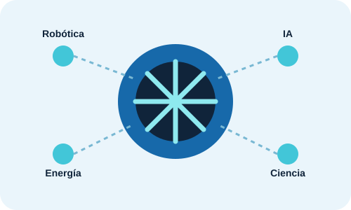

Singularidad tecnológica
Es una hipótesis sobre un futuro en el que la inteligencia artificial podría alcanzar capacidades superiores a las humanas en muchas tareas y contribuir a acelerar sus propias mejoras. Según esta idea, el cambio tecnológico podría volverse muy rápido y difícil de predecir.
No existe certeza científica de que ocurra ni de cuándo podría suceder.

Futurismo tecnológico
El futurismo tecnológico estudia y propone posibles escenarios sobre cómo los avances científicos y tecnológicos podrían cambiar el futuro. Analiza tendencias como la automatización, las ciudades inteligentes, la medicina de precisión, la energía limpia y la exploración espacial.
Oportunidades
Mejorar servicios, facilitar tareas, apoyar la investigación y resolver problemas.
Desafíos
Evitar desigualdades, proteger datos y preparar a las personas para nuevos empleos.
Responsabilidad
Evaluar los impactos y mantener los derechos humanos en el centro.